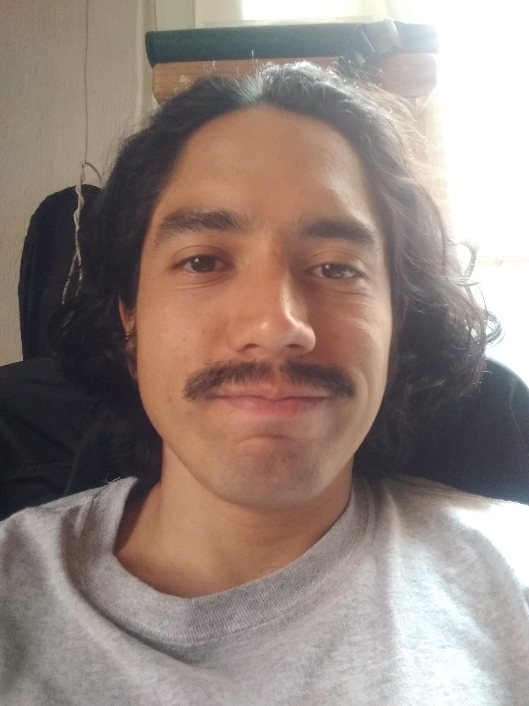

Rodrigo Martínez

Summary
I am a responsible person, a good worker and dedicated to any job I have.
Education.
- Universidad Nacional Autónoma de México
- Facultad de Filosofía e Historia
- Colegio de Historia
- Internship in History major
- 2011-2015
Work experience.
- Electoral Trainer-Assistant at Instituto Electoral de la Ciudad de México, 2021-2022.
- Capacitación y asistencia electoral en el Proceso Electoral Ordinario Local para las elecciones de Diputaciones, Alcaldías y Concejalías 2020-2021 dentro de la Ciudad de México.
- Recolectar y trasladar los paquetes electorales locales al término de la jornada electoral y auxiliar en los cómputos locales distritales y/o municipales.
- Packaging artwork at Museo Universitario de Arte Moderno, 2021-2022.
- Embalaje, cuidado y recolección de obras de arte en diferentes estados de la República mexicana, así como en el interior de la Ciudad de México para artistas independientes, exposiciones en museos y/o exposiciones integradas a festivales artísticos.
- Devolver las obras de arte a los propietarios que prestaron las mismas una vez concluido el tiempo de exposición.
Skills.
- Puntualidad y compromiso laboral.
- Facilidad para trabajar en equipo y adaptación a distintos ambientes de trabajo.
- Experiencia de trabajo en campo.
- Respuesta favorable al trabajo bajo presión.
- Empatía para orientar, comunicar y/o atender las necesidades que se requieran.
- Microsoft Office Suite.
- Management of electronic correspondence.
- Drafting reports and other documents.
- Classification and organization of documents.
Awards.
- Publication of the article "Expressions of the Cold War in football." in the student magazine "Afluente", UNAM, mayo 2016.
Others